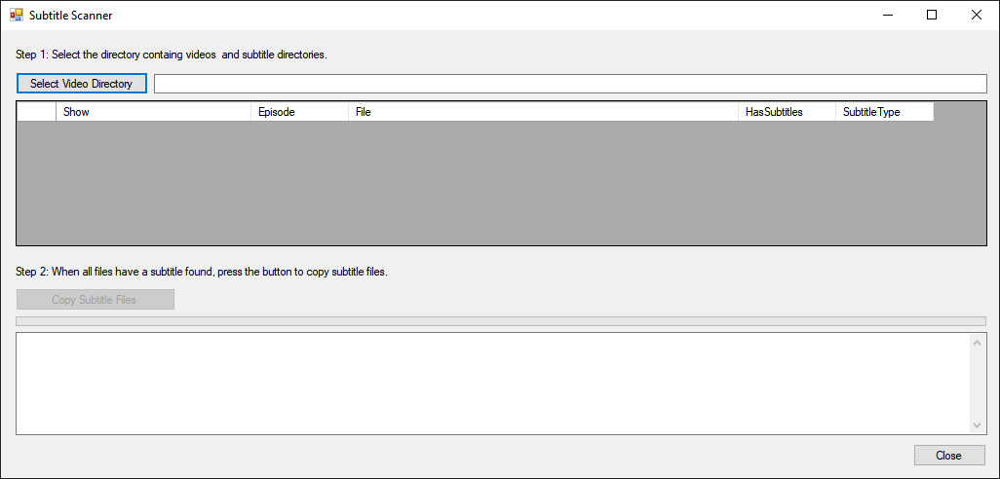

Organize your subtitle files and automatically rename them to match your video files.
With a file structure like this:
This software will organize it to look like this:
This software automatically matches video files with their subtitle directories by looking at the "S01E01" phrase.
Then copies the first subtitle it finds in matching directories and renames it to match the video file.
Download v1.0 beta This software is offered freely as-is for personal use, and by downloading and/or using this software you understand that the author takes no responsibility for loss of data or otherwise unexpected results.